Shintoku
Shintoku · Hokkaido
Shintoku
Highlighted on the Hokkaido map.
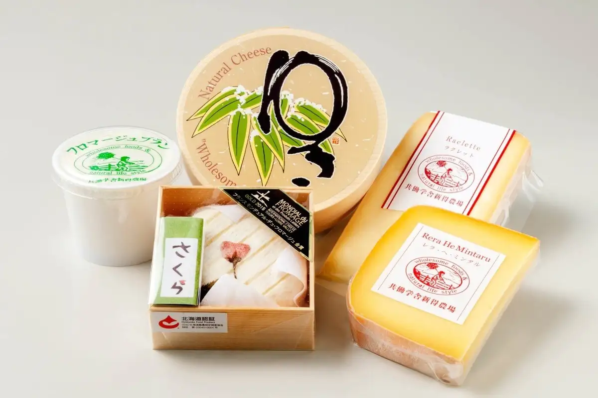
Stay
さんたり
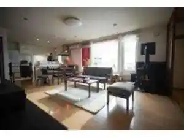
Santari
サホロリゾートホテル
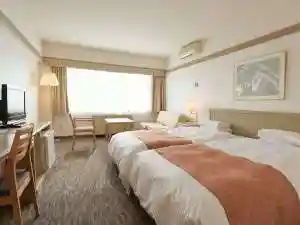
Sahororizootohoteru
湯宿くったり温泉 レイクイン
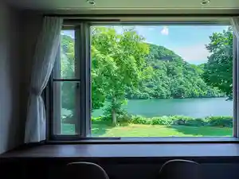
Yuyado Kuttari Onsen Reikuin
トムラウシ温泉東大雪荘
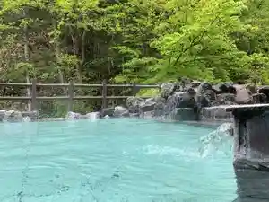
Tomuraushi Onsen Toudai Yuki Sou
Dining
北広牧場
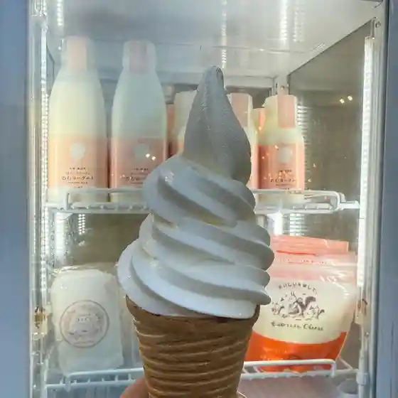
Kita Kou Bokujou
おやつ屋さん 花
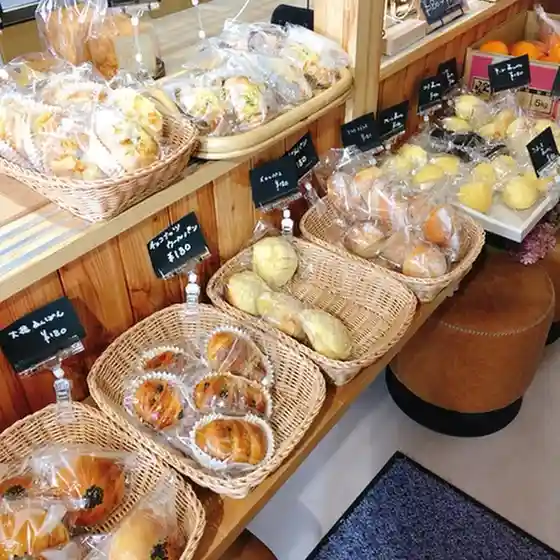
Oyatsu Ya San Hana
平成園
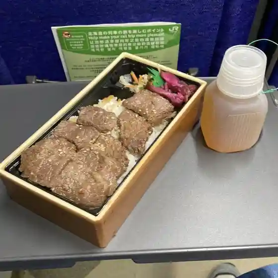
Heisei Sono
山の交流館とむら
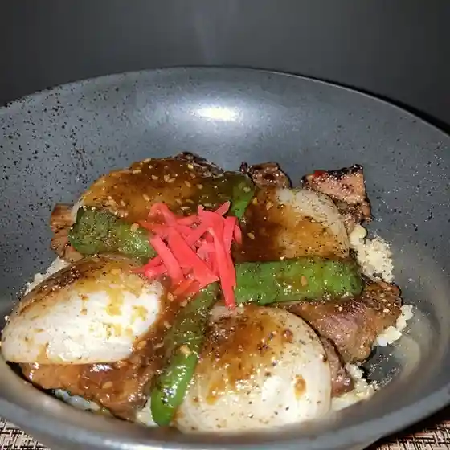
Yama No Kouryuu Kan Tomura
ドライブイン松の味
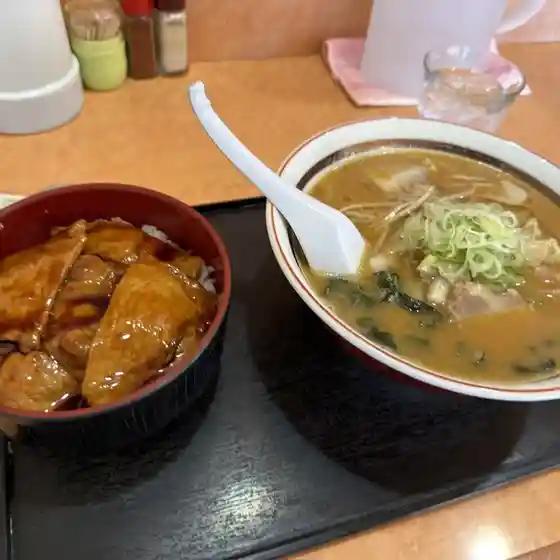
Doraibuin Matsu No Aji
ゲストハウス さんたり
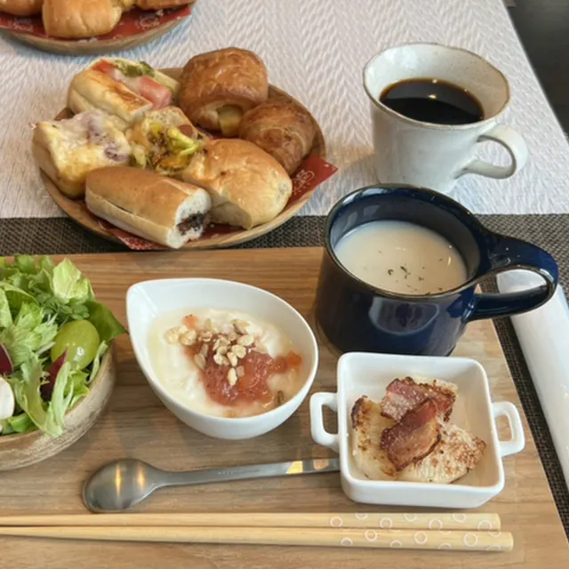
Gesutohausu Santari
ドラム館

Doramu Kan
Cafeクックル（山の交流館とむら）

Cafe Kukkuru ( Yama No Kouryuu Kan Tomura )
ウエスタンビレッジサホロ
Uesutanbirejjisahoro
ビーワイルド
Biiwairudo
ビオラ
Biora
セイコーマート 新得店
Seikoomaato Shintoku Mise
居酒屋 もり
Izakaya Mori
たこや
Takoya
コトイセ
Kotoise
ごりらのしっぽ
Goriranoshippo
宿屋cafe ARUKU
Yadoya Cafe Aruku
ヴィレッジ 432
Virejji 432
上田精肉店
Ueda Seinikuten
食事処 せきぐち
Shokuji Tokoro Sekiguchi
スロウ inn 楓
Surou Inn Momiji
花森熊
Hanamori Kuma
フクハラ 新得店
Fukuhara Shintoku Mise
レストラン サホロガーデン
Resutoran Sahorogaaden
Sights
Kyodo Gakusha Shintoku Nojo
Kyodo Gakusha Shintoku Nojo